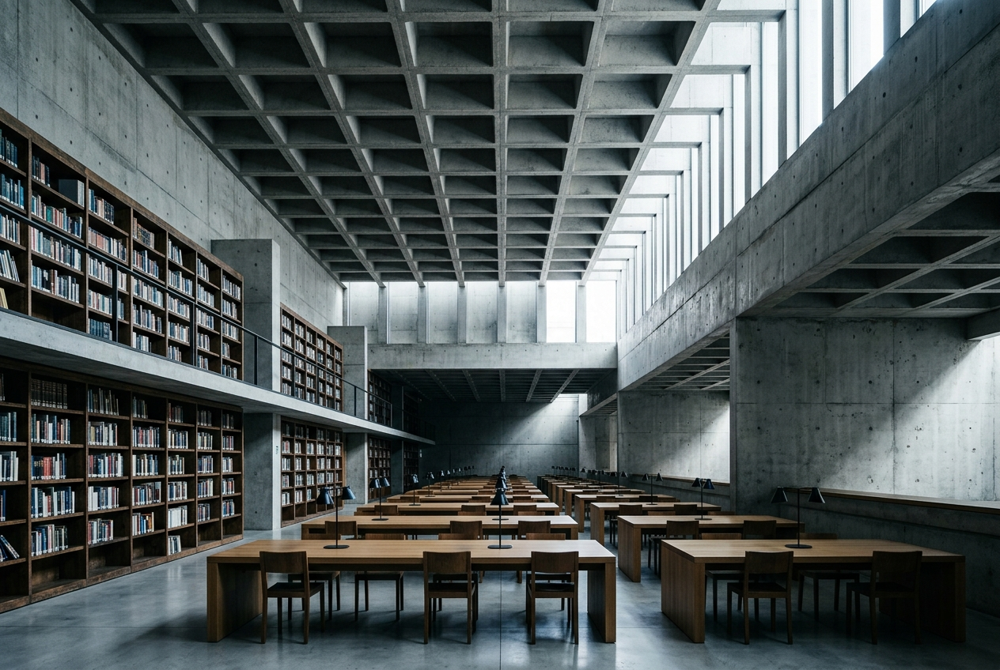
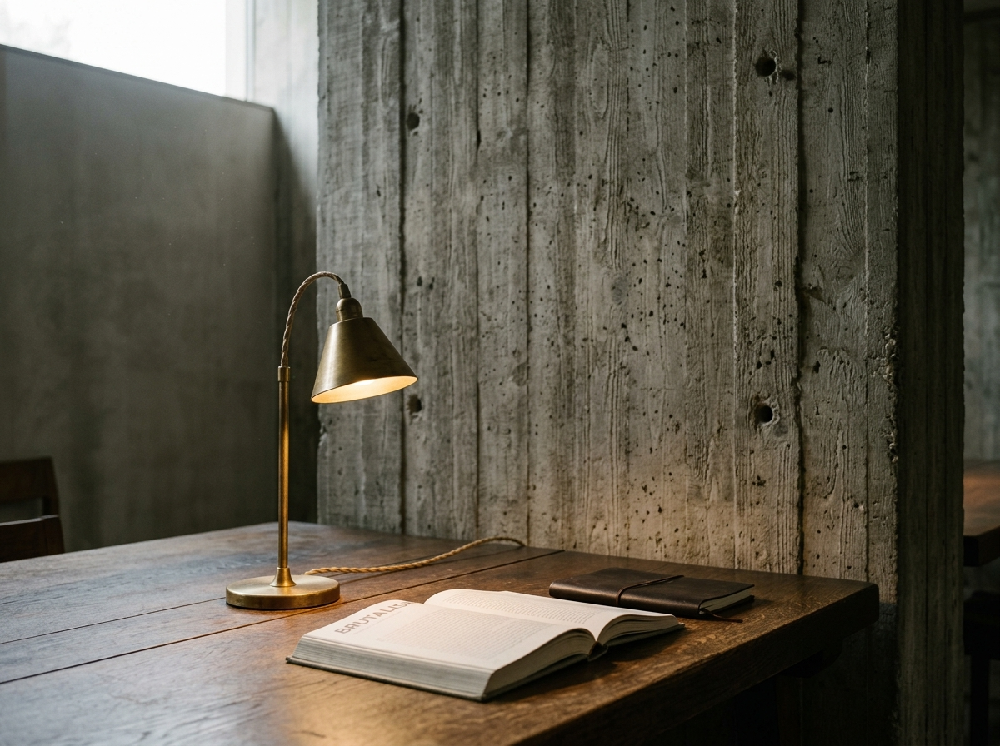
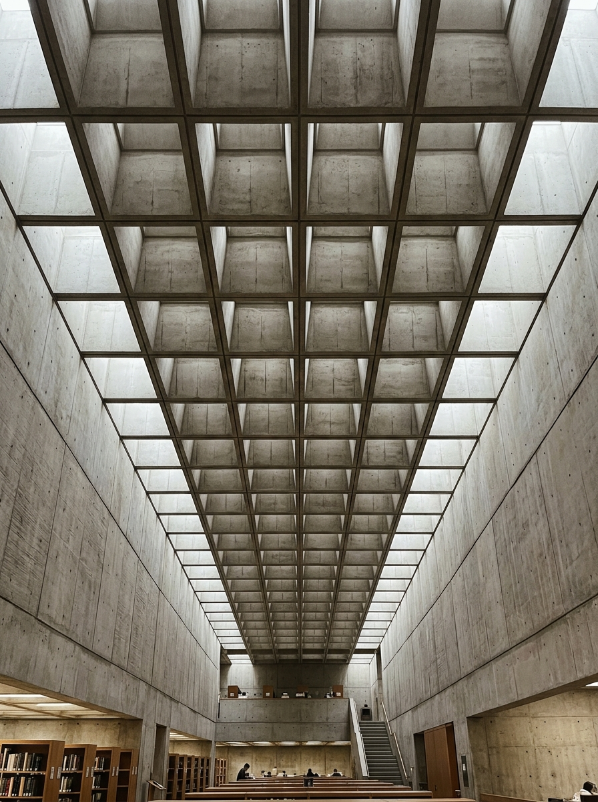

Biblioteca Central
A brutalist public library defined by coffered concrete, dark timber shelving, and dramatic clerestory light.

The central reading nave, framed by overhead modular concrete coffers.
Tectonic weight and
acoustic stillness.
Conceived as an enduring sanctuary for civic inquiry in central Porto, Biblioteca Central addresses the city with monumental quietude. The architectural strategy prioritises thermal mass and acoustic silence, employing thick in-situ concrete walls that insulate visitors from urban street noise.
The primary spatial instrument is an expansive waffle-coffered roof slab. Deep reveals cast in raw, unpainted concrete act as daylight diffusers, capturing low northern Atlantic illumination and softening harsh shadows across the desks below. Direct sunlight is carefully baffled to safeguard delicate paper archives while maintaining an uplifting connection to changing meteorological conditions.
Dark oiled timber shelving wraps the perimeter walls, introducing tactile warmth, natural acoustic dampening, and the comforting aroma of beeswax and wood. Long continuous communal reading tables foster quiet social presence, treating civic reading as a shared cultural ritual.

